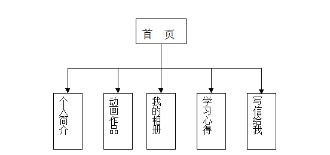

一、 网站的总体规划
1. 确定整体风格
风格因人而异，不同的人对同一主题设计的网站风格都不一样。一些要点：
（1） 网站的标志应该放在醒目位置并保持不变，一般放置在网页的左上角
（2） 导航条应该放在每张网页的相同位置，便于浏览
（3） 确定网站的主体颜色，并注意颜色搭配，要让人感觉舒服
（4） 页面布局要规划好，一般采用上边导航条，下边内容或左边导航条右边内容的方式，或两者结合
2. 网页颜色搭配
3. 绘制设计草图

二、 网页的制作
1. 建立站点
设置D盘MYWEB为主目录，并在其中建立三个文件夹images、flash和web，分别存放图片、动画和网页文件。再建立首页文件“index.htm”。
2．首页的设计
（1）将标题设为“小小的家”，点击“插入”-“表格”，插入一个4行2列，宽760像素，其他为0的表格。
在属性面板中设置表格属性，高200（可在代码中设定表格高度 height=200），居中对齐，背景白色。
选中行列的方法：（1）鼠标左键拖动；（2）Ctrl+左击；
（2）合并单元格
选中第二行的两个单元格，右击，“表格”-“合并单元格”，
选中第四行的两个单元格，点击“修改”-“表格”-“合并单元格”
（3）表格的嵌套
选中第三行第二列的单元格，点击“插入”-“表格”，插入一个2行1列，宽度80%，边框粗细0的表格。
回到原单元格，属性面板中设置水平居中、垂直居中。
（4）页面属性设置
点击“修改”-“页面属性”，设置字体“默认”，大小“14像素”，文本“黑色”，背景“灰色”，左右上下边距“0”。
（5） 表格第一行第一列：属性 宽 140， 高 140， 插入logo.jpg
第一行第二列：宽620，插入ban.swf(插入-媒体，swf文件)
第二行： 高 30，大小22背景色“#FF0000”，切换到css属性，设定文本颜色“白色”，输入 “首页 个人简介 动画作品 我的相册 学习心得 写信给我”
第三行第一列：背景色 #0067C3， 高度600
第三行第二列：在其第一行的单元格中，设置高度“400”，输入“有朋自远方来 不亦乐乎！”，字体“楷体”，字号“60”，颜色“蓝色”，字体居中排列，并用shift+enter键控制间距。
在第二行的单元格中，设置高度“50”，输入“欢迎参观”，颜色“淡红”，居中排，字号“25”。
第四行：背景色 “黑色”，文本颜色“白色”，点击“插入”-“日期”，再输入“Copyright ”，点击“插入”-“HTML”-“特殊字符”-“版权”，输入“ 2008 小小版权所有”。
（6） 建立超级链接
在WEB目录下建立jianjie.htm,xiangce.htm,xuexi.htm,donghua.htm四个文件
把个人简介等文字与对应的文件链接起来。查看效果，注意要使用相对路径。
去掉文字下的下划线（利用CSS样式）的操作步骤：
点击“窗口”-“CSS样式”，在右边的CSS样式窗口中选择“新建CSS规则”按钮（在窗口右下角），在弹出的窗口中：“选择器类型”中选择“标签”，“选择器”中选择“a”，“定义在”选择“仅对本文档”，单击确定。在弹出的属性窗口中，将“修饰”（text-decoratoion)的无选项前面打勾。
如果还想改链接的颜色，可以“新建CSS规则”，名称为
a:active 表示选中状态 a:hover 表示光标放上时
a:link 正常状态 a:visited 访问过的状态
例如：设置a:hover，将“修饰”的无选项前面打勾，颜色“#00ff00”，再查看一下效果。
建立外部链接：选中“写信给我”，属性面板中链接输入mailto:ggg@163.com
3.个人简介网页的制作
把index.htm另存为jianjie.htm，使得两个文档的格局相同（在弹出的“要更新链接吗？”对话框中单击“是”按钮）。
把第三行第二列中的两行一列的表格删掉。输入相应的文字（见1.txt），并排版，左对齐，字号24，标题蓝色，字号30。
在第三行第一列中输入“个人概况 联系方式 个人能力 教育背景”，字号30，单元格属性中对齐方式设为水平“居中对齐”，垂直“顶端”。
在其右边的文字中相应位置加上锚点：
在“个人概况”前点击“插入”-“命名锚记”，在“锚记名称”对话框中输入“1”，选中左边单元格中的“个人概况”，将其链接到该锚点（在属性面板的“连接”输入框中输入“#1”）；对于其他文字同样处理，建立4个锚点。
4．动画作品网页的制作
(1)把index.htm另存为donghua.htm（在弹出的“要更新链接吗？”对话框中单击“是”按钮）
(2)在第三行第一列的单元格中单击，点击“插入”-媒体-swf，选择button1.swf,选中该按钮，将其大小设为"宽131
高57"
(3)打开标签检查器，点击行为-加减号-转到URL，输入网址donghua.htm，点确定链接到“donghua.htm,并设置响应事件为OnMouseDown
再按同样方法建立两个按钮，分别链接到“donghua2.htm”和“donghua3.htm”
在第三行第二列中的2行1列的表格的第一个单元格中插入“diqiu.swf”，第二个单元格中输入“地球”。
（3）把donghua.htm另存为“donghua2.htm”
在相应的位置插入“qiqiu.swf”，并输入文本“气球”
把donghua.htm另存为“donghua3.htm”
在相应的位置插入“guangxian.swf”，并输入文本“光线掠过的效果”
5.我的相册网页的制作
（1）把index.htm另存为xiangce.htm；（在弹出的“要更新链接吗？”对话框中单击“是”按钮）
（2）选中中间的两行1列的表格的第一行单元格，右击，“表格”-“拆分单元格”，输入2行，高50
（3）第一行输入文本“我的小猫”.，蓝色，60像素大小，居中对齐
（4）第二行点击“插入”-“图像”，选中mao.jpg，并调整其大小，查看效果（可以存盘退出再进）
（5）第三行插入链接，这里不用文本，点击“插入”-“媒体”-“FLASH文本”。
大小 24 颜色 ：蓝色 转滚颜色：红色 文本：下一页 目标：_self
另存为：text.swf
（6）把xiangce.htm另存为xiangce2.htm，更改相应的文字和图片“我的爱好”，qiang.jpg，插入两个flash文本，“上一页”，“下一页”，中间可以加入空格ctrl+shift+space
（7）把xiangce.htm另存为xiangce2.htm，更改相应的文字和图片“我喜爱的明星”，star.jpg，删掉“下一页”，把“上一页”的属性中另存为设为“text3.swf”